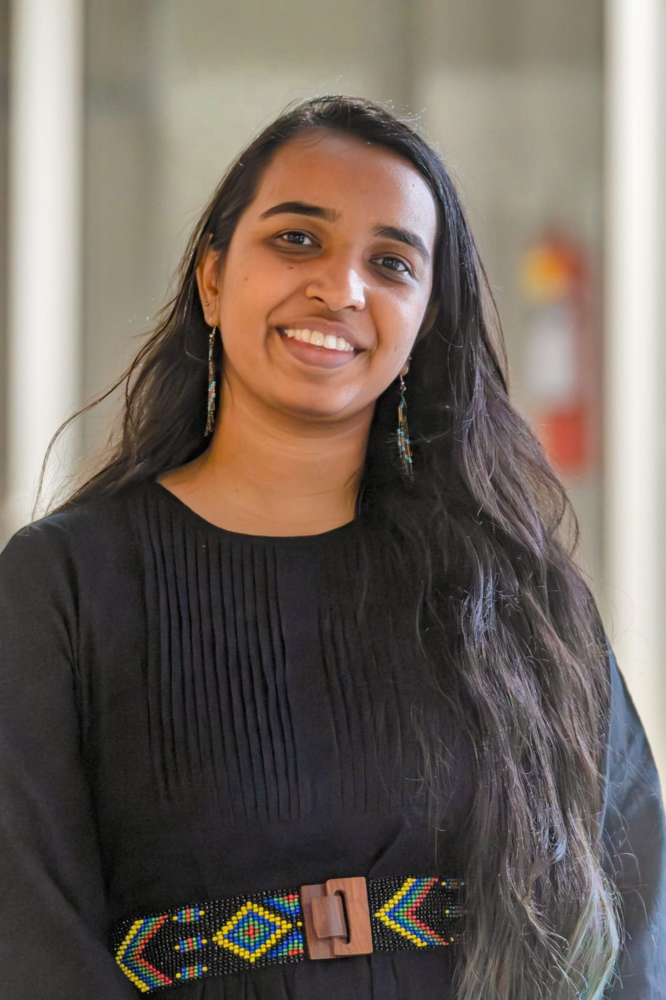
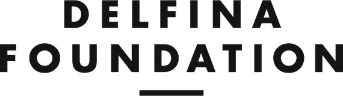
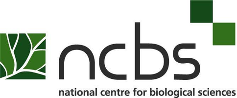
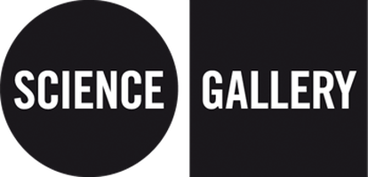
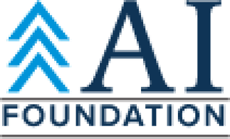
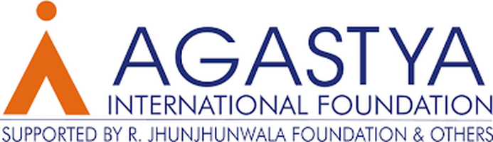

Madhushree Kamak
Curator | Creative producer | Designer
Available for new projects · Bengaluru
Madhushree Kamak is a creative producer working at the intersection of art, science, and emerging technologies, with a practice grounded in bringing scientists, artists, and communities into dialogue around challenges of the Anthropocene.
Formerly Head of Exhibitions and Programmes at Science Gallery Bengaluru, the largest node of the international Science Gallery Network in Asia, she led exhibition seasons including CARBON, PSYCHE, and CONTAGION, alongside long-term interdisciplinary public engagement and learning programmes. This was followed by a Brooks International Research Fellowship at Tate Modern and Delfina Foundation, London, in 2024, studying AI and emerging technologies in museum experience – work that continues through the BreAIk, ChAInge, RegenerAIte residency with the Goethe-Institut and MAP, Bengaluru.
Since then, she has worked independently as a curator and creative producer. Recent projects include Manotsava, the National Mental Health Festival, and Microbial Realm: Resistance Rising, with the Global Strategy Lab (York University) and the Wellcome Trust. Her most recent exhibition, Beneath the Green Canopy, opened in April 2026 at the Rani Abbakka Tulu Nadu Museum, Bantwal, supported by India Foundation for the Arts and Tata Trusts, exploring Tulu culture through ten everyday objects connected by the coconut palm. In 2026, she was also a Curator Resident at Tokyo Arts and Space (TOKAS), researching genetic colonization, food sovereignty, and the erasure of heirloom rice varieties across India and Japan.
Her curatorial interest lies in how art-science collaboration can make complex, entangled issues legible and emotionally resonant to the public, treating human and non-human actors alike as collaborators in knowledge-making. She holds a Master's in Information Design from the National Institute of Design (NID) and an MRes in Biological Sciences from the Tata Institute of Fundamental Research (TIFR).
SERVICES
Exhibition CurationExperience & XR DesignMuseum ConsultingPublic ProgrammesResearch & EvaluationFELLOWSHIPS & RECOGNITION
2026Curator in Residence, Tokyo Arts and Space2025–26BreAIk, ChAInge, RegenerAIte residency, Goethe-Institut × MAP2024Brooks International Fellow, Tate & Delfina Foundation2022Berlin Biennale Curators Workshop2022Connectors Workshop, Cape Town2022Falling Walls finalist, Future Learning (Xperimenter)2021Falling Walls winner, Science Engagement (CONTAGION)2021Khoj Curatorial Intensive South Asia2021Ars Electronica Creative Producers Programme2020Contributor, Anthropocene Curriculum, HKW Berlin2019Adobe Top Talent2018NASSCOM Design4India Award; Kantar Information is Beautiful longlistEXPERIENCE
- 2026–Lead Curator, Research & ContentMIST, Bengaluru
- 2026Curator in ResidenceTokyo Arts and Space, Tokyo
- 2024–Curatorial team, creative productionManotsava, National Mental Health Festival
- 2025CuratorGood To Go Death Literacy Festival
- 2025–26Curator and designerBeneath the Green Canopy, Rani Abbakka Tulu Nadu Museum
- 2024–26Co-creatorMicrobial Realm, Global Strategy Lab × Wellcome
- 2024Brooks International Research FellowTate & Delfina Foundation, London
- 2019–24Head of Exhibitions & ProgrammesScience Gallery Bengaluru
EDUCATION
- 2017–19MDes, Information DesignNational Institute of Design
- 2013–16MRes, Biological SciencesTata Institute of Fundamental Research
TEACHING
- 2023Crafting Carbon, open electiveNational Institute of Design
- 2023Exhibitions: Creating Climate ConversationsKrea University
- 2019–24Public engagement coursesMediator and Xperimenter programmes, Science Gallery Bengaluru
WORKED WITH










